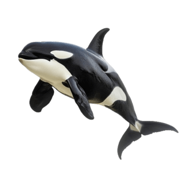
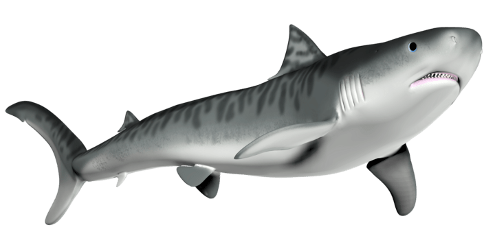

Pecahkan gelembung-gelembungnya satu per satu. Setiap satu berisi hal yang pengen mama bilang ke kamu, sebelum mama sampai di sisimu.


Buka halamannya satu-satu, kayak buku beneran.
Sharf memilih dengar penjelasannya sampai habis, dan percaya lagi.
Sharf memilih pergi, dan tidak kembali lagi.
Sharf adalah seekor hiu yang baik hati dan cerdas. Sharf memaafkan mama orca, yang sebenarnya masih sayang sekali sama Sharf.